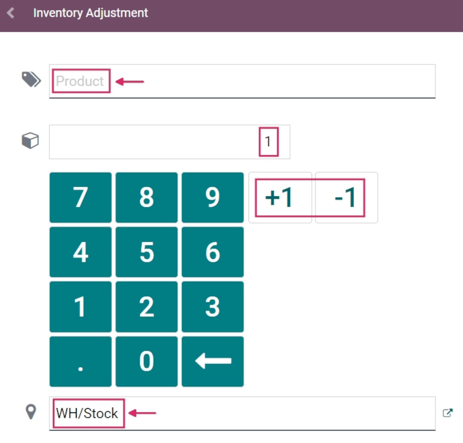

Aplicar ajustes de inventario con códigos de barra¶
En un almacén, es posible que los recuentos de inventario registrados en la base de datos no siempre coincidan con los recuentos de inventario reales. En esos casos, los ajustes de inventario se pueden hacer para conciliar las diferencias, y asegurar que los recuentos registrados en la base de datos coinciden con los recuentos reales en el almacén. En Odoo, la aplicación Código de barras se puede utilizar para hacer estos ajustes.
Estos ajustes de pueden realizar en tiempo real con un lector de barras compatible con Odoo o con la aplicación móvil de Odoo.
Nota
Para ver una lista de códigos de barras compatibles con Odoo, además de otros hardware para las aplicaciones Inventario y Código de barras, vaya a la página de Odoo Inventario • Hardware.
Ver también
Activar la aplicación Código de barras¶
Para utilizar la aplicación Código de barras para crear y aplicar ajustes de inventario, debe inslatarla. Para esto tiene que habilitar la función desde la configuración de la aplicación Inventario.
Para hacerlo, vaya a la . Desplácese hacia abajo hasta la sección de Código de barras, y marque la casilla junto a la opción Lector de código de barras.
Una vez que la casilla esté marcada, haga clic en Guardar en la parte superior de la página para guardar los cambios.
Después de guardar, aparece un nuevo menú desplegable bajo la opción Lector de código de barras, etiquetado como Nomenclatura del código de barras, donde se puede seleccionar Nomenclatura predeterminada o Nomenclatura predeterminada GS1. Cada opción de nomenclatura determina cómo los escáneres interpretan los códigos de barras en Odoo.
También hay una flecha de enlace interno Configurar códigos de barras de productos, junto con un conjunto de botones de Imprimir para imprimir comandos de códigos de barras y una hoja de demostración de códigos de barras.

Ver también
Para obtener más información sobre la instalación y configuración de la aplicación Código de barras, consulte los documentos Configurar su escáner de código de barras y Active los códigos de barras en Odoo.
Realizar un ajuste de inventario¶
Primero vaya al tablero en , donde encontrará diferentes opciones, como Operaciones, Ajustes de inventario y Transferencias por lote.
Para crear y aplicar los ajustes de inventario, haga clic en el botón Ajustes de inventario en la parte inferior de la pantalla.
Esto lo llevará a la página Acción del cliente de código de barras de inventario, etiquetada como Ajuste de inventario en la sección superior.

Para iniciar el ajuste, primero escanee la ubicación de origen, que es la ubicación actual en el almacén del producto cuyo recuento debe ajustarse. A continuación, escanee el código o códigos de barras del producto.
Puede escanear el código de barras de un producto específico varias veces para aumentar la cantidad de ese producto en el ajuste.
Truco
Si la función multi ubicación del almacén no está activada en la base de datos, no es necesario escanear una ubicación de origen. Basta con escanear el código de barras del producto para iniciar el ajuste del inventario.
También puede hacer clic en el icono ✏️ (lápiz) a la derecha de la línea de producto para cambiar la cantidad.
Al hacerlo, se abre una ventana independiente con un teclado numérico. Edite el número en la línea Cantidad para cambiar la cantidad. Además, puede pulsar los botones +1 y -1 para añadir o restar cantidad del producto, y las teclas numéricas también se pueden utilizar para añadir cantidad.
Example
En el siguiente ajuste de inventario, se escaneó la ubicación de origen WH/Stock/Shelf/2 y se asignó. A continuación, se escaneó 3 veces el código de barras del producto [FURN_7888] Soporte de escritorio con pantalla para aumentar las unidades del ajuste. Se pueden añadir más productos a este ajuste escaneando los códigos de barras de esos productos específicos.

Para completar el ajuste de inventario, haga clic en el botón verde ✅ Aplicar en la parte inferior de la pantalla.
Una vez aplicado, Odoo regresará a la pantalla de Lector de código de barras. Aparecerá un listón verde pequeño en la esquina superior derecha para confirmar la validación del ajuste.
¿Sabía que?
La aplicación Código de barras de Odoo proporciona algunos datos de demostración con códigos de barras para que pueda conocer las funciones de la aplicación. Estas funciones se pueden usar para pruebas y las puede imprimir desde la pantalla principal de la aplicación.
Para acceder a los datos de demostración, vaya a la y haga clic en hoja de códigos de barras de existencias y comandos para inventario (en negritas y azul) en la ventana emergente de información arriba del lector de código de barras.

Agregar productos al ajuste de inventario de forma manual¶
Incluso cuando los códigos de barras para la ubicación o el producto no están disponibles puede usar la aplicación Código de barras de Odoo para realizar ajustes de inventario.
Para hacerlo, vaya a .
Esto lo llevará a la página Acción del cliente de código de barras de inventario, etiquetada como Ajuste de inventario en la sección superior.
Para agregar productos de forma manual a este ajuste, haga clic en el botón blanco ➕ Agregar producto al final de la pantalla.
Esto le redirigirá a una nueva página en blanco donde deberá seleccionar el producto, la cantidad y la ubicación deseada.

Primero, haga clic en la línea Producto y seleccione el producto para el que quiere ajustar el inventario. Después, ingrese la cantidad de ese producto, ya sea cambiando el 1 en la línea Cantidad o mediante los botones +1 y -1 para agregar o restar la cantidad de un producto. También puede agregar cantidades con el teclado.
Debajo del teclado numérico está la línea de ubicación, que debería decir WH/Stock de forma predeterminada. Al hacer clic en esta línea abrirá un menú desplegable de ubicaciones en la que deberá seleccionar la ubicación de origen para el ajuste de inventario.
Una vez que esté listo, haga clic en Confirmar para confirmar los cambios.
Para aplicar el ajuste de inventario, haga clic en el botón verde ✅ Aplicar en la parte inferior de la pantalla.
Una vez aplicado, Odoo regresará a la pantalla de Lector de código de barras. Aparecerá un listón verde pequeño en la esquina superior derecha para confirmar la validación del ajuste.